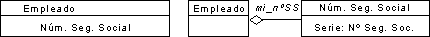
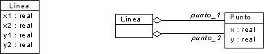

| Directriz: Implementación de clases |
 |
|
| Elementos relacionados |
|---|
Implementación de operacionesPara implementar operaciones, haga lo siguiente:
Elija un algoritmoMuchas operaciones son lo suficientemente simples para ser implementadas desde la operación y su especificación. Los algoritmos no triviales son necesarios básicamente por dos motivos: para implementar operaciones complejas para las que se proporciona una especificación y para optimizar operaciones para las que un algoritmo simple pero ineficaz sirve a modo de definición. Elija estructuras de datos adecuadas a los algoritmosLa elección de algoritmos implica elegir la estructura de datos sobre la que trabajan. Muchas estructuras de datos de implementación son clases de contenedores como, por ejemplo, matrices, listas, colas, pilas, conjuntos, agrupaciones y sus respectivas variantes. Muchos lenguajes orientados a objetos y muchos entornos de programación proporcionan bibliotecas de clases con estos tipos de componentes reutilizables. Defina nuevas clases y operaciones según sea necesarioSe pueden encontrar nuevas clases para mantener resultados inmediatos, por ejemplo. Puede que se añadan operaciones de bajo nivel a la clase para descomponer una operación compleja. Estas operaciones a menudo son privadas para la clase, es decir, no son visibles fuera de la propia clase. Codifique la operación.Escriba el código de la operación empezando por su sentencia de interfaz. Siga las directrices de programación pertinentes. Implementación del estadoEl estado de un objeto puede ser implementado haciendo referencia a los valores de sus atributos, sin una representación especial. Las transiciones de estado para un objeto de este tipo estarán implícitas en los valores variables de los atributos, y los comportamientos variables están programados mediante sentencias condicionales. Esta solución no es satisfactoria en cuanto a comportamientos complejos porque normalmente lleva a estructuras complejas, difíciles de modificar a medida que se añaden más estados o el comportamiento cambia. Si el comportamiento del elemento de diseño (o de sus constituyentes) depende del estado, normalmente habrá uno o más diagramas de gráfico de estados que describan el comportamiento de los elementos modelo en el elemento de diseño. Estos diagramas de gráfico de estados sirven de entrada importante durante la implementación. Las máquinas de estado que se muestran en los diagramas de gráficos de estado hacen que el estado de un objeto sea explícito, y las transiciones y el comportamiento necesario están claramente delineados. Una máquina de estado se puede implementar de las siguientes maneras:
Las máquinas de estado con subestados concurrentes pueden ser implementadas delegando la gestión del estado a objetos activos, uno para cada subestado concurrente, ya que los subestados concurrentes representan computaciones independientes (que pueden, sin embargo, interactuar). Cada subestado se puede gestionar utilizando una de las técnicas que se han descrito anteriormente. Uso de la delegación para implementar la reutilizaciónSi una clase o partes de ella puede ser implementada reutilizando una clase existente, utilice la delegación en lugar de la herencia. La delegación implica que la clase se implemente con ayuda de otras clases. La clase hace referencia a un objeto de la otra clase utilizando una variable. Cuando se llama a una operación, ésta llama a una operación en el objeto referenciado (de la clase reutilizada) para la verdadera ejecución. Por tanto, delega la responsabilidad a la otra clase. Implementación de asociacionesUna asociación unidireccional se implementa como un puntero - un atributo que contiene una referencia a un objeto. Si la multiplicidad es uno, entonces se implementa como puntero simple. Si la multiplicidad es muchos, entonces se implementa como un conjunto de punteros. Com la multiplicidad establecida en muchos, se puede utilizar una lista en lugar de un conjunto. Una asociación bidireccional se implementa en forma de atributos en ambas direcciones, utilizando técnicas de asociación unidireccional. Una asociación calificada se implementa como tabla de búsqueda (por ejemplo, una clase Smalltalk Dictionary) en el objeto calificador. Los valores de selector en la tabla de búsqueda son los calificadores, y los valores de destino son los objetos de la otra clase. Si se tiene que acceder en orden a los valores de calificador, los calificadores pueden ser clasificados en un conjunto ordenado o un árbol. En este caso, el tiempo de acceso será proporcional al registro N, donde N es el número de valores de calificador. Si los calificadores se derivan de un conjunto finito compacto, los valores del calificador pueden correlacionarse en un rango de números enteros y la asociación puede implementarse de forma eficaz como matriz. Este método es más atractiva si la asociación está mayormente llena en lugar de contener pocos elementos, y es ideal para conjuntos finitos completos. La mayoría de lenguajes orientados a objetos y entornos de programación proporcionan bibliotecas de clases con componentes reutilizables para implementar los diferentes tipos de asociaciones. Implementación de atributosImplemente atributos mediante alguno de estos tres métodos: utilización de tipos primitivos integrados, utilización de una clase existente, o definición de una clase nueva. Definir una clase nueva normalmente proporciona más flexibilidad, pero introduce un direccionamiento indirecto innecesario. Por ejemplo,el número se seguridad social de un empleado puede ser implementado como atributo de tipo Serie o como una clase nueva.  Implementaciones alternativas para un atributo. También puede darse el caso de que grupos de atributos se combinen en nuevas clases, como muestra el ejemplo siguiente. Ambas implementaciones son correctas. 
Los atributos en línea se implementan como asociaciones a una clase Point. |
© Copyright IBM Corp. 1987, 2006. Reservados todos los derechos. |